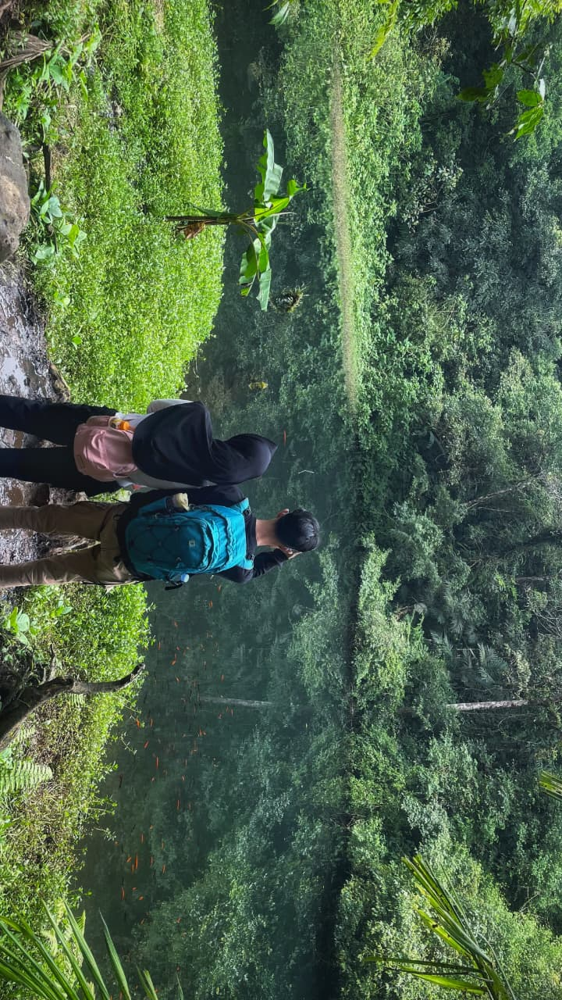
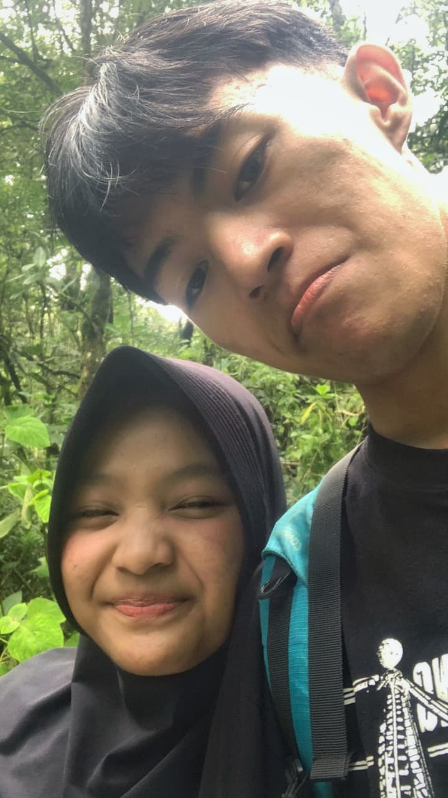
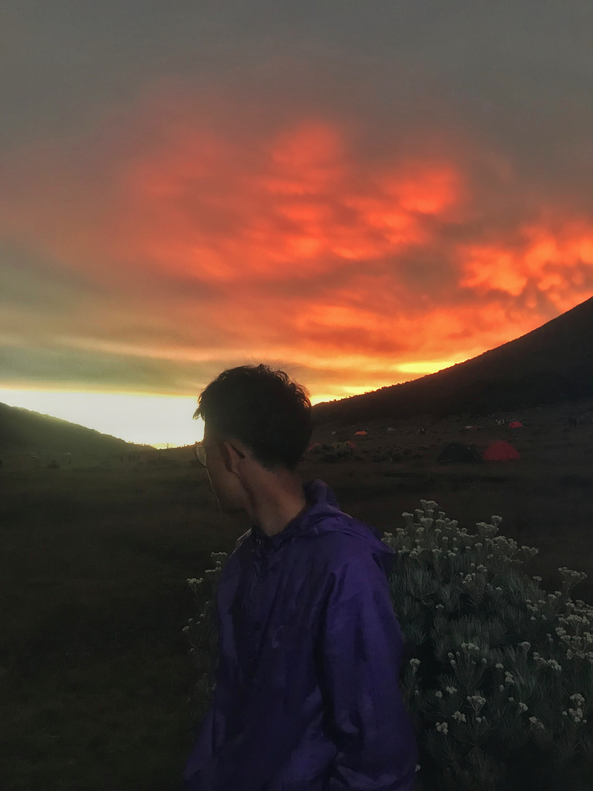
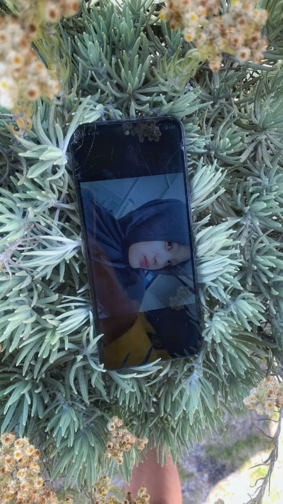
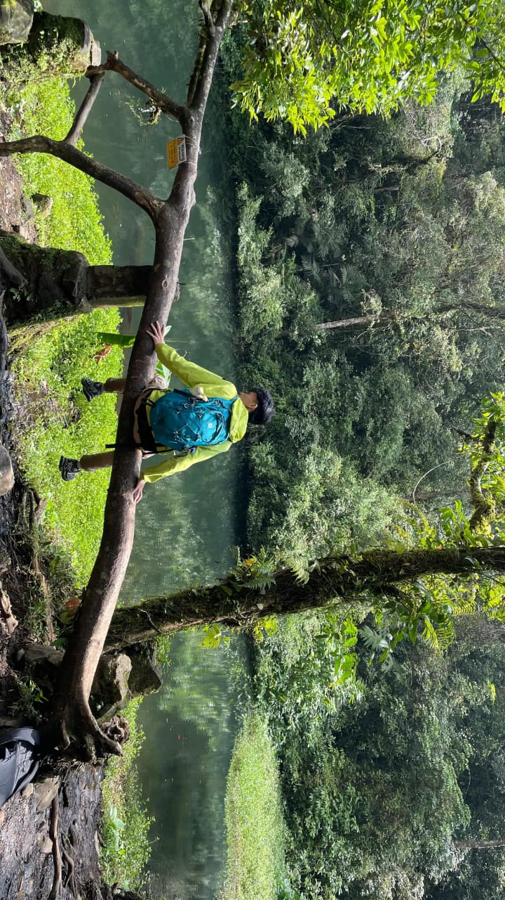

jatuh cinta padamu adalah ketidaksengajaan yang jauh lebih indah dari ribuan hal yang pernah kurencanakan.

bayangkan jika kita jadi sebuah takdir suatu hari, senangmu berapa? aku tentu yang paling banyak.

bahkan di bumi yang sangat luas ini, bagian yang menyenangkan hanyalah bertemu denganmu.

sekalinya aku jatuh cinta akan kupastikan, akan jatuh cinta yang paling dalam.

sama seperti senja, kamu masih dan akan tetap menjadi yang favorit di antara langit lain-snya.

pagi tidak selalu tentang bangun tidur dan sarapan, pagi bisa saja tentang pengakuan bahwa aku masih mencintaimu hari ini.

kepada yang jadi pujaan hati setinggi langit, pada dirinya, semua terlihat menawan. lebih dan kurangnya, manusia terlalu sukarela mencintainnya.

aku tidak pernah bosan untuk memujimu, lewat jutaan kata yang jika dicari maknanya... hanya berisi keindahanmu saja.

Your Eyes, Your Voice, Your Smile, I Love Everything About You.